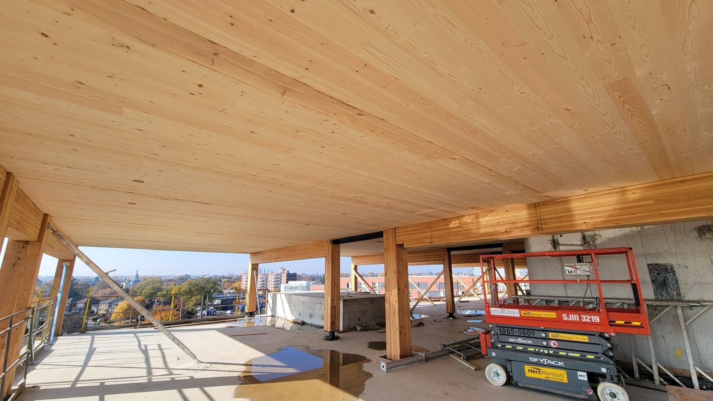

Mass Timber & CLT
Engineered wood panels strong enough to replace concrete and steel — cross-laminated timber is building mid-rises and storing carbon. Beautiful and low-carbon; for tropical homes it's still early and moisture-sensitive.

Mass timber is wood reinvented as a heavy structural material. Cross-laminated timber (CLT) — the headline product — glues layers of lumber in alternating directions into massive panels strong enough to replace concrete floors and steel beams. It's building apartment blocks and offices up to a dozen storeys, it stores carbon instead of emitting it, and the exposed wood is stunning. For homes in the tropics, though, it's still an early, premium, and moisture-sensitive option.
How it works
Layers (lamellae) of dimensional lumber are stacked at 90° to each other and bonded under pressure into large, rigid panels — floors, walls, and roofs — that are cut to a digital file in the factory and bolted together on site like flat-pack furniture at building scale. The cross-lamination gives strength and dimensional stability in both directions, which is what lets timber behave like a structural slab. Related products include glulam (beams/columns) and DLT/NLT.
What does it cost?
Mass timber is currently a premium ($$$) structural system — the panels and engineering cost more than concrete or light framing today, justified on speed of erection, lighter foundations, carbon, and the beauty of exposed wood. Costs are falling as capacity grows, but there's essentially no CLT supply chain in Central America yet, so for a regional home it's an import. (Approximate and project-specific.)
The trade-offs at a glance
| Factor | Rating | Notes |
|---|---|---|
| Cost | 🔴 | Premium today; imported into the region |
| Sustainability | 🟢 | Stores carbon; renewable if well-sourced |
| Build speed | 🟢 | Panels bolt together fast, dry site |
| Aesthetics | 🟢 | Warm exposed wood, architectural |
| Strength | 🟢 | Replaces concrete floors and steel beams |
| Moisture/termite | 🔴 | Wood in a hot, humid, termite-heavy climate needs serious protection |
| Fire | 🟢 | Chars predictably; engineered for fire rating |
| Availability in region | 🔴 | Essentially no CLT supply chain in Central America yet |
Buildability — how hard is it to actually build?
Where mass timber exists as an industry, buildability is excellent — panels are precision-cut and assembled dry and fast by trained crews. In tropical Latin America the constraints are decisive: there's no regional CLT manufacturing, so every panel is a costly import, and the deeper issue is climate — a wood structure in a hot, wet, termite-heavy environment demands relentless moisture detailing and pest protection, exactly the conditions that punish timber. Mass timber is a genuinely important material for the future of low-carbon mid-rise and commercial building, and where a truly sustainable structural wood makes sense in the tropics today, regionally-grown bamboo/guadua is often the more practical, native answer. Watch CLT closely; it's not yet the pragmatic pick for a tropical home.
Thinking about building in Panama or Costa Rica?
SORA is a fixed-price design-build platform for foreign buyers. We build in reinforced concrete by default — and we can talk you through when an alternative method actually makes sense for the tropics. Play with cost live in the 3D configurator.
See real 2026 build costs →Frequently asked questions
What is CLT (cross-laminated timber)?
CLT is an engineered wood panel made by gluing layers of lumber in alternating directions under pressure, creating large, rigid panels strong enough to serve as structural floors, walls, and roofs — effectively letting timber replace concrete slabs and steel beams in multi-storey buildings.
Is mass timber good for tropical homes?
Not yet, for most. Mass timber's carbon and speed benefits are real, but a wood structure in a hot, humid, termite-heavy climate needs serious moisture and pest protection, and there's essentially no CLT supply chain in Central America, so it must be imported at a premium. For sustainable structural wood in the tropics today, bamboo/guadua is often more practical.
Is mass timber a fire risk?
Less than people assume. Mass timber chars on the outside in a slow, predictable way that protects the structural core, and it's engineered and tested to meet fire ratings — which is why it's approved for tall buildings. It behaves very differently from light wood framing in a fire.
Sources & verification
Figures in this guide were checked against primary and authoritative sources on 27 July 2026. Immigration, tax, and cost figures change — always confirm the current rules with the official body or a licensed professional before acting.
- WoodWorks — mass timber & CLT construction
- CleanTech Group — low-carbon construction materials